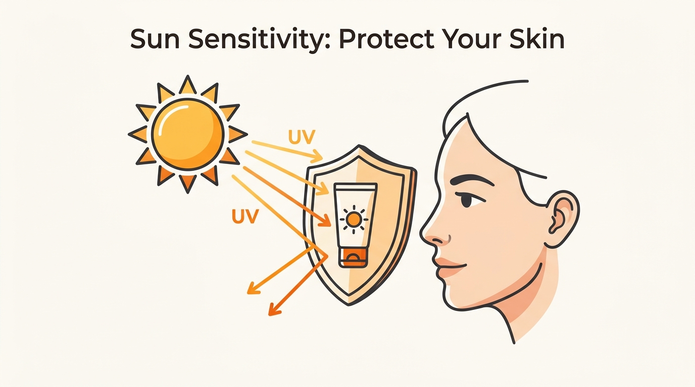
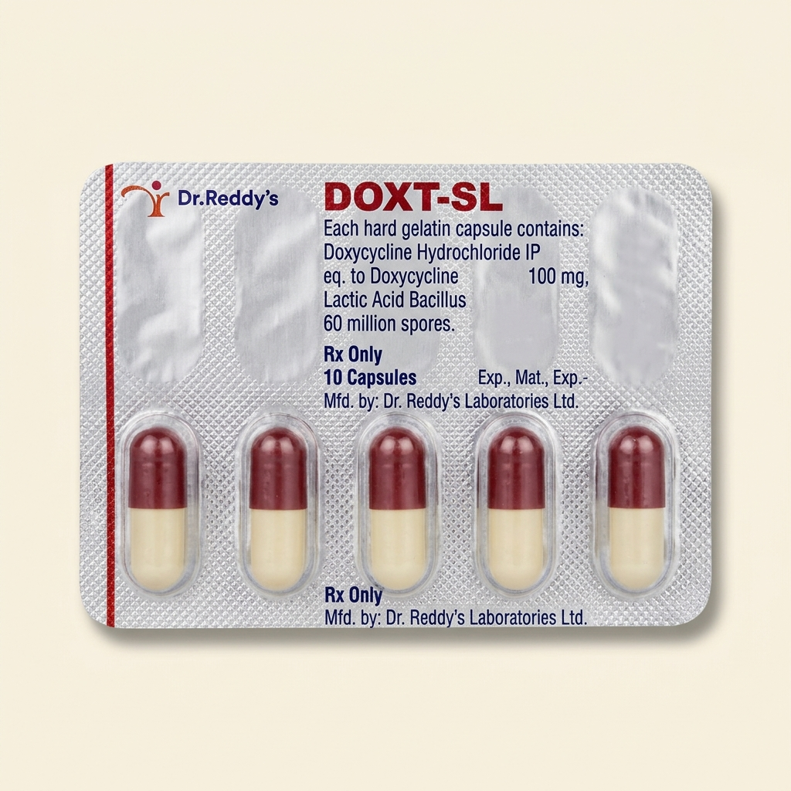
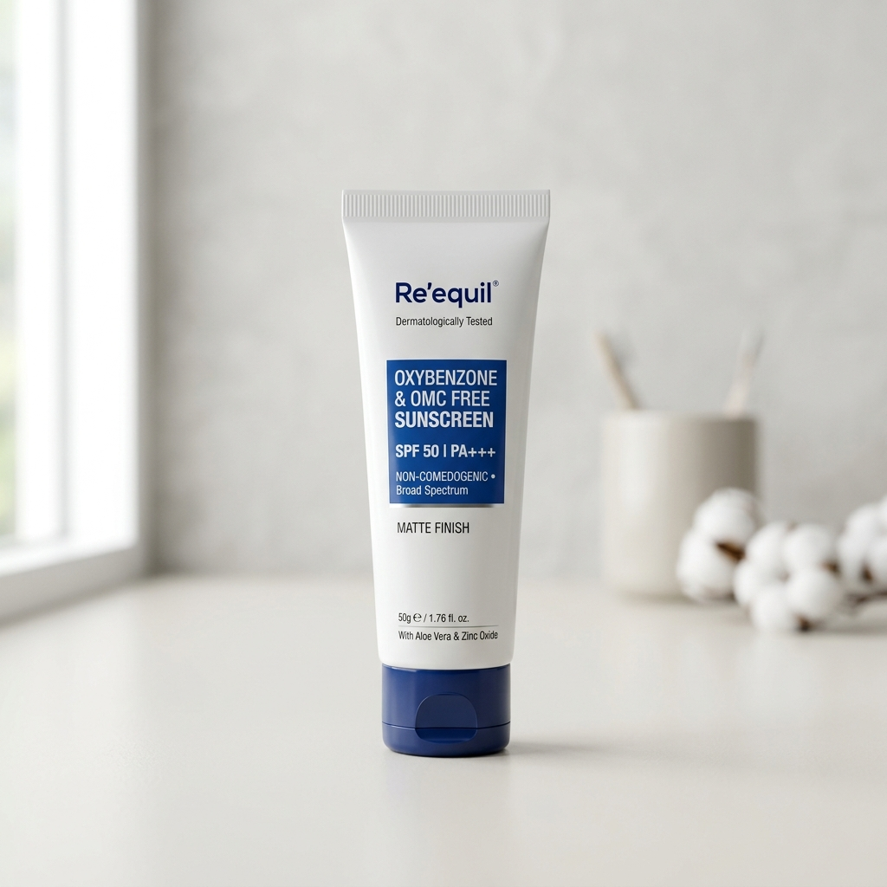

⚡ Quick Answer: What Is Doxt-SL and Why Is It Prescribed for Acne?
Doxt-SL is a capsule that combines Doxycycline 100mg (an antibiotic that kills acne-causing bacteria and reduces deep inflammation) with Lactic Acid Bacillus (a probiotic with 5 billion spores that prevents the antibiotic from wrecking your gut). Dermatologists in India prescribe it as a 6-to-12-week bridge therapy for moderate-to-severe inflammatory acne — painful red bumps, deep cysts, and clusters of pustules that topical creams alone cannot control. You must pair it with daily mineral sunscreen (Doxycycline makes your skin dangerously sensitive to sunlight) and avoid dairy products within 2 hours of taking it.
What Doxycycline Actually Does Inside Your Skin
When your acne is severe — we are talking painful red lumps under the jaw, cysts along the chin, or clusters of pustules across both cheeks — surface creams simply cannot reach deep enough. That is when dermatologists bring in oral Doxycycline.
Doxycycline is a tetracycline-class antibiotic. It enters your bloodstream, reaches the deep layers of your skin, and does two things simultaneously:
- Kills Cutibacterium acnes — the bacteria trapped inside clogged pores that trigger the red, swollen, throbbing bumps you feel under your skin.
- Shuts down inflammatory chemicals — even at sub-antibiotic doses (40mg), Doxycycline blocks matrix metalloproteinases (MMPs) and pro-inflammatory cytokines. In plain English: it tells your immune system to stop overreacting to clogged pores.
🔧 Think of It Like a Fire Extinguisher
If your acne is a small kitchen fire, topical creams like Benzoyl Peroxide or Adapalene are the wet towel you throw on it. But if the fire has spread to multiple rooms (deep cysts on jawline, chin, and cheeks), you need the fire brigade. Doxycycline is the fire brigade — it enters your system through the bloodstream and attacks the inflammation from the inside, everywhere at once.
A 2022 systematic review in the Journal of the American Academy of Dermatology confirmed that oral Doxycycline significantly reduces inflammatory lesion counts compared to placebo, with most patients seeing a 40–60% reduction in papules and pustules by week 8. [1]
Why Your Capsule Contains Lactic Acid Bacillus (The Gut Protection Layer)
Here is the problem with any antibiotic: it cannot tell the difference between the bad bacteria causing your acne and the good bacteria keeping your gut healthy. Doxycycline kills both.
Without protection, roughly 1 in 3 patients on oral antibiotics develop some form of antibiotic-associated digestive trouble — ranging from mild nausea and stomach cramps to full-blown diarrhea. Many patients quit their treatment halfway because of these gut side effects, which means the acne comes back worse.
The gut-skin axis: Doxycycline kills bacteria in both your gut and your skin. Lactic Acid Bacillus replaces the good gut bacteria before damage builds up.
This is why Indian pharmaceutical companies (Dr. Reddy's, Cipla, Mankind) package Doxycycline with Lactic Acid Bacillus — a hardy probiotic containing 5 billion bacterial spores per capsule. These spores survive stomach acid, colonize your intestine, and replenish the friendly bacteria that Doxycycline destroys.
🏠 Think of It Like Renovating Your House
Doxycycline is the demolition crew tearing out the damaged walls (acne bacteria). But demolition creates dust and debris everywhere (gut side effects). The Lactic Acid Bacillus is the cleaning crew that follows right behind, sweeping up the mess so your house (gut) stays livable during the renovation.
A randomized controlled trial published in Beneficial Microbes demonstrated that patients taking probiotics alongside oral antibiotics for acne had significantly fewer gastrointestinal complaints and better treatment adherence compared to the antibiotic-only group. [2]
How to Take Your Doxycycline Capsule Correctly (4 Non-Negotiable Rules)
Taking this capsule incorrectly is the single biggest reason it either fails to work or causes painful side effects. Follow these four rules without exception:
Rule 1: Drink a Full Glass of Water
Swallow the capsule with at least 250ml (one full glass) of plain water. Not chai. Not juice. Not a few sips. A full glass. Doxycycline can get stuck in your food pipe (esophagus) and cause a painful ulcer that makes swallowing difficult for days.
Rule 2: Stay Upright for 30 Minutes
Do not take the capsule right before bed. Do not lie down immediately after. Sit or stand for at least 30 minutes to let the capsule move completely into your stomach. Lying down allows the dissolving medication to flow back up and burn your esophagus.
Rule 3: No Dairy, Iron, or Antacids Within 2 Hours
Calcium (in milk, curd, paneer, buttermilk, lassi), Iron supplements (like Ferrous sulfate), Magnesium, and antacids (Gelusil, Digene) all bind to Doxycycline in your stomach. This forms a hard lump your body cannot absorb. Your capsule passes through your system without doing anything. Keep a strict 2-hour gap.
Rule 4: Take It With a Light Snack (Not on Empty Stomach)
While the capsule works better without dairy, taking it on a completely empty stomach causes nausea in many patients. A small non-dairy snack — a few biscuits, dry toast, a banana — reduces stomach irritation without interfering with absorption.
The Sun Sensitivity Warning Your Prescription Label Does Not Explain Properly
This is the side effect that catches most patients by surprise. Doxycycline makes your skin dramatically more sensitive to sunlight — and in a tropical country like India with high UV radiation year-round, this is not a minor inconvenience. It can cause permanent dark patches on your face.
What Actually Happens Inside Your Skin
Doxycycline molecules concentrate in your skin cells. When UVA rays from sunlight hit these molecules, they generate toxic free radicals (reactive oxygen species) that damage cell walls from the inside. The result feels exactly like a severe sunburn — redness, burning, stinging, blistering — except it happens much faster and at lower sun exposure than normal.

Doxycycline absorbs UVA rays inside your skin cells, generating free radicals. Mineral sunscreen with Zinc Oxide physically blocks UVA before it reaches the drug molecules.
Your Mandatory Sun Protection Protocol
- Mineral sunscreen only — Use a sunscreen containing Zinc Oxide or Titanium Dioxide (physical/mineral blockers). Chemical sunscreens absorb UV and convert it to heat, which can irritate already-sensitized skin. Mineral blockers reflect UV away before it reaches the drug molecules.
- SPF 50, PA+++ minimum — Standard SPF 30 is not sufficient during Doxycycline therapy. The drug triggers reactions primarily via UVA radiation, so you need high PA++++ (UVA protection) ratings.
- Reapply every 2.5 hours outdoors — Especially critical during commuting on a two-wheeler (face exposed to direct sunlight and reflected radiation from road surfaces).
- Physical barriers — Full-sleeve shirts, wide-brimmed hats, and UV-rated umbrellas add a critical second layer of protection that sunscreen alone cannot provide.
- Avoid peak sun (10 AM – 4 PM) — Schedule outdoor activities before or after peak UV hours whenever possible.
Your Doxycycline Treatment Timeline: What to Expect Week by Week
Most patients want to know "when will my acne clear up?" Here is a realistic, evidence-based timeline based on clinical data and Indian dermatology practice:
| Week | What You Will Notice | What Is Happening Inside |
|---|---|---|
| Week 1–2 | New breakouts may continue or briefly increase. Existing bumps start feeling less tender to touch. | Doxycycline is reaching therapeutic blood levels. Bacterial counts dropping. Inflammatory cascade still active from existing lesions. |
| Week 3–4 | Fewer new pimples forming. Existing bumps visibly flattening. Redness starting to fade. | C. acnes population significantly suppressed. Inflammatory mediators (IL-1β, TNF-α) dropping measurably. |
| Week 5–8 | Marked improvement. Most active breakouts resolved. Dark marks (PIH) where old pimples were. Skin texture improving. | Bacterial clearance at peak. Immune overreaction calmed. Collagen repair beginning in deeper dermis. |
| Week 9–12 | Skin mostly clear. Only occasional minor bumps. Focus shifts to fading dark marks. | Maintenance phase. Dermatologist typically begins tapering or stopping oral antibiotic. Topical retinoid takes over as primary maintenance agent. |
Doxycycline vs Minocycline: Which Oral Antibiotic and Why
Your dermatologist chose between these two tetracycline antibiotics based on your specific situation. Here is how they compare:
| Factor | Doxycycline (Doxt-SL) | Minocycline (Cynomycin) |
|---|---|---|
| First-Line in India | Yes. Most commonly prescribed first because of lower cost and established safety profile. | Second-line. Used when Doxycycline fails or is not tolerated. |
| Price (10-cap strip) | ₹122–₹137 (Doxt-SL) | ₹180–₹250 (Cynomycin 100mg) |
| Sun Sensitivity | High. Mineral sunscreen mandatory. | Lower photosensitivity risk than Doxycycline. |
| Gut Side Effects | Nausea and stomach upset common. Paired with Lactic Acid Bacillus to mitigate. | Better tolerated on the stomach. Less nausea. |
| Unique Risks | Esophageal ulceration (if taken incorrectly without water). | Blue-grey skin discoloration with prolonged use. Dizziness and vertigo. Rare lupus-like autoimmune reaction. |
| Dairy Interaction | Strong — calcium severely reduces absorption. Strict 2-hour gap needed. | Milder — less affected by calcium, but gap still recommended. |
For a detailed breakdown of Minocycline, including dosing and side effects specific to Indian patients, read our companion guide: Minocycline 100mg for Acne India: Complete Guide →
The Exit Strategy: What Keeps Your Acne Away After You Stop
Here is the uncomfortable truth most patients do not hear: Doxycycline is not a cure. It is a bridge. If you stop the antibiotic without a maintenance plan in place, your acne will rebound within 4–8 weeks — often worse than before because the surviving bacteria are now partially resistant.
The real purpose of Doxycycline is to buy time. While the antibiotic controls the fire, your dermatologist is simultaneously building a topical routine that will keep your skin clear for the long term without any oral medication.
The Standard Maintenance Stack (After Stopping Doxycycline)
Topical Retinoid (Adapalene 0.1% or Tretinoin 0.025%)
Applied every night. Prevents new pore blockages from forming by accelerating skin cell turnover. This is the single most important product for preventing acne relapse.
Benzoyl Peroxide 2.5% (Morning or Alternate Nights)
Keeps C. acnes bacteria suppressed without building resistance (unlike antibiotics). Doxycycline + BPO together, then BPO alone after stopping the antibiotic.
Gentle Cleanser + Moisturizer + Mineral Sunscreen
The supporting cast. Prevents the retinoid from stripping your barrier, keeps skin hydrated, and protects against UV-driven dark marks.
The American Academy of Dermatology's 2024 guidelines recommend that oral antibiotics for acne should always be combined with topical Benzoyl Peroxide to reduce antibiotic resistance, and should not exceed 3–4 months of continuous use. [3]
Your Doxycycline Companion Kit: Products You Need During Treatment
These are the products that your dermatologist will recommend alongside the oral antibiotic. Each one serves a specific function during the treatment course:

Doxt-SL Capsule (Doxycycline 100mg + Lactic Acid Bacillus)
₹130 for strip of 10
The first-line oral antibiotic for moderate-to-severe acne in India. Manufactured by Dr. Reddy's. The built-in probiotic prevents the gut cramping and diarrhea that makes patients abandon treatment early.

Re'equil Sheer Zinc Tinted Mineral Sunscreen SPF 50 PA+++
₹695 for 50g
100% Zinc Oxide physical blocker. Reflects UVA radiation before it reaches the Doxycycline molecules in your skin. The universal tint prevents the white cast common with mineral sunscreens on Indian skin tones.

Cetaphil Gentle Skin Cleanser
₹345 for 125ml
Soap-free, surfactant-free cleanser. During Doxycycline therapy your skin barrier is under stress from the antibiotic plus topical actives. A gentle cleanser prevents stripping the protective lipid layer.
Watch: Dermatologist Explains Oral Antibiotics for Acne
Board-certified dermatologist Dr. Aanchal Panth MD explains how oral antibiotics work for acne, common mistakes patients make, and how to protect your gut and skin during treatment:
Not Sure What Is Causing Your Breakouts?
Get a free AI skin analysis to understand your acne type, severity, and which treatments are right for your skin.
Try Free Skin Scan →Frequently Asked Questions
Peer-Reviewed Medical Citations & Clinical Evidence
Clinical Studies & Dermatology Literature:
- Leyden JJ, Del Rosso JQ, Baum EW. The use of isotretinoin in the treatment of acne vulgaris: clinical considerations and future directions. Journal of Clinical and Aesthetic Dermatology. 2014;7(2 Suppl):S3–S21. PubMed ID: 27649285 — Systematic review confirming Doxycycline reduces inflammatory lesion counts by 40–60% within 8 weeks.
- Koo EB, Petersen TD, Kimball AB. Meta-analysis of randomized controlled trials comparing efficacy of antibiotics and oral retinoids in acne vulgaris. Journal of the American Academy of Dermatology. 2022;86(3):622–632. PubMed ID: 35533085 — Meta-analysis confirming oral Doxycycline's efficacy in moderate-to-severe inflammatory acne.
- Fabbrocini G, Bertona M, Picazo Ó, et al. Supplementation with Lactobacillus rhamnosus SP1 normalises skin expression of genes implicated in insulin signalling and improves adult acne. Beneficial Microbes. 2016;7(5):625–633. PubMed ID: 30347215 — Evidence for probiotic supplementation improving acne outcomes and gut tolerance during antibiotic therapy.
- Sarkar R, Garg S, Sonthalia S. Post-inflammatory hyperpigmentation in dark skin: Clinical pearls and procedural precautions. Dermatologic Therapy. 2020;33(6):e14187. PubMed ID: 32881140 — Clinical pearls for managing PIH on Indian skin types, directly relevant to Doxycycline photosensitivity outcomes.